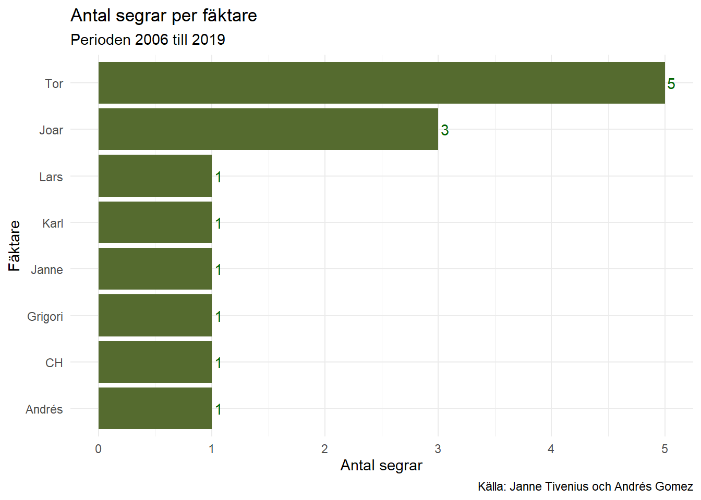
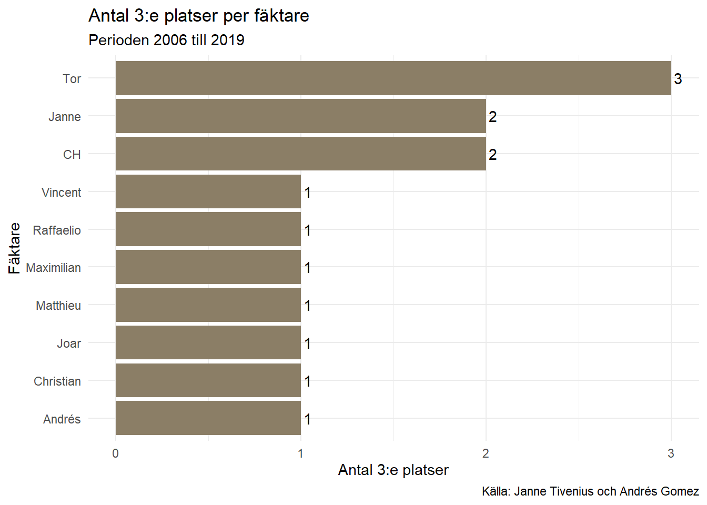

Statistik
Resultat från 2006 till 2018
För den nostaligiske har jag lagt upp den här listan över placeringar 1-3 i tidigare års KM-tävlingar. Jag har fått uppgifterna från Jan Tivenius som var tävlingsledare under den perioden. Tack Janne för hjälpen!
Analys av perioden 2006 - 2018
## [1] 13En tabell kan vara lite svår att smälta, för att dyrka upp innehållet har jag gjort lite cool analys av historiken. På så vis kan man exempelvis se vilka som har placerat sig väl och hur många segrar eller andra placeringar dom olika fäktarna har lyckats med.
Antal pallplatser per fäktare
Vi börjar analysen med att kolla på vilka fäktare som har placerat sig bland de 3 bästa och hur ofta det skett.
Som ni kan se har Tor ett överväldigande försprång med 11 pallplatser. Han nästan har lika många pallplatser som Joar, Janne och Andrés tillsammans. Men låt oss titta på hur placeringarna fördelar sig, dvs hur många segrar, 2:a platser och 3:e platser.
Antal segrar per fäktare
Vi börjar med segrar:

Inte oväntat hamnar Tor på toppen igen. Joar visar också att han ligger en bra bit före klungan av “one hit wonders”. Hur ser det ut med 2:a platser?
Antal 2:a platser per fäktare
Såhär ser analysen ut om vi kollar på 2:a platser:

Här är det jämnare, Tor i toppen igen men andra fäktare är ganska nära.
Antal 3:e platser per fäktare
Slutligen en figur över fördelningen av 3:e platser:

Wow, Tors 11 pallplatser gjorde att han toppade i alla delkategorier, men i kategorin 3:e platser skuggas han av veteranstjärnan CH. Som ni ser har den sistnämnde lyckats repetera bragden och kan stoltsera med hela två stycken 2:a platser.
KM-plaketten
Som FFF:are har säkert flera av er många gånger stått framför silverplaketten över klubbmästare och drömt om att se ert namn bland segrarna.
Några andra har kanske istället i tårögd vördnad tittat på ert egna namn på plaketten. Och ytterligare några få har möjligen räknat hur många inristningar som ni gett upphov till.
Det är ju förstås också möjligt att det finns några som inte ens känner till plakettens existens. För dom kan jag avslöja att det finns en silverplakett på vilken klubbmästares namn och år finns inristat.
Ovavsett vilken av ovanstående kategorier ni tillhör har jag sammanställt informationen på plaketten. Här är tabellen:
Den uppmärksamma tabellnörden ser att det finns vissa tidsluckor på plaketten.
Första serien med inristningar sträcker sig över perioden 1944 till 1950. Därefter är det en lucka på 22 år där nästa tidserie som omfattar perioden 1972 till 1975. Efter 1975 blir dett ytterligare ett hopp fram till 1982, varefter KM ser ut att ha hållits varje år till dags dato.
Analys av segrare på KM-plaketten
Vad kan man läsa ut från KM-plaketten? Det beror naturligtvis till stor det på vad man är intresserad av att studera. För min del börjar jag med konstatera att det totalt finns 48 inristningar totalt, men endast 19 unika namn. Det betyder att någon eller av några av namnen dyker upp flera gånger.
De som vunnit 1 gång
För spänninens skull börjar vi med en tabell över de som lyckats med bragden att vinna KM 1 gång:
Lite roligt att notera är att man i detta segment också kan hitta det enda far- och sonparet! Johan och Kalle kan båda stoltsera med sina namn på listan.
De som vunnit flera gånger
Redan tidigare har vi kunnat konstatera att det finns fäktare som har flera segrar på sitt samvete. Bland dom är Tor den mest notoriska segraren under perioden 2006 till 2018. Hur ser det ut om man kollar en längre tidsperiod? Svaret ser ni här:
Se på tusan om inte Tor dyker upp igen! Hela 12 segrar, dubbelt så många som 2:an Joar! Efter dessa båda kommer en drös fäktare med 4 intekningar.